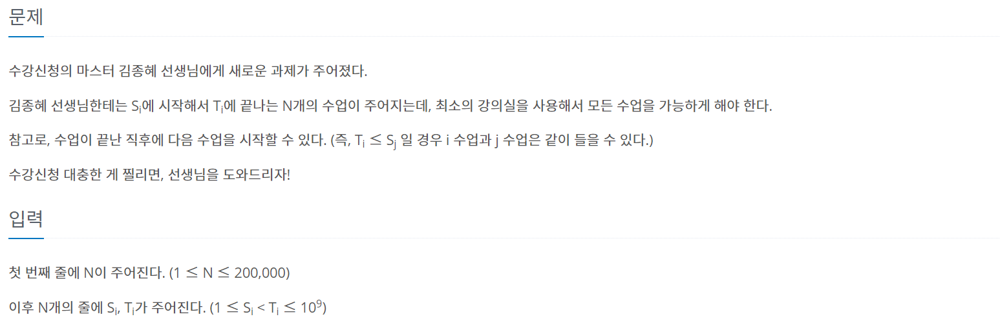
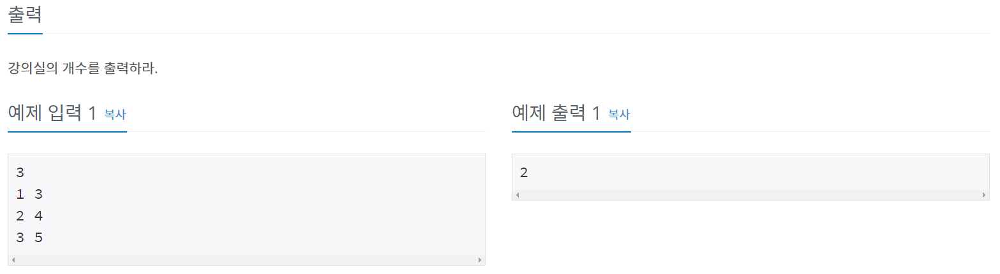
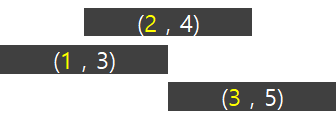
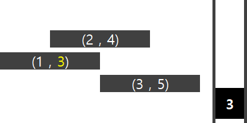
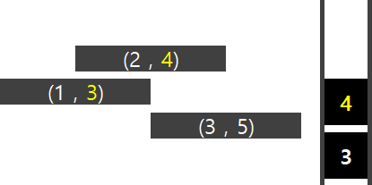
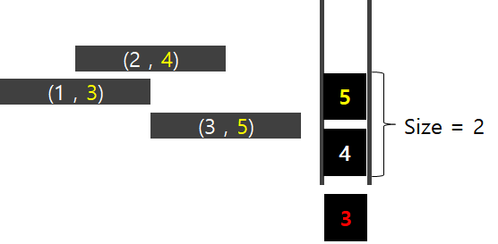

#문제정보
출처 : www.acmicpc.net/problem/11000
난이도 : 골드5
분류 : 그리디(GREEDY) 알고리즘
 
#문제분석
저는 11000 문제 풀이를 위해서 C++ STL의 우선순위 큐(priority_queue) 자료구조를 사용했습니다.
문제에서 주어진 예제(1,3)(2,4)(3,5)를 통해서 설명하도록 하겠습니다.
우선, 시작시간을 기준으로 오름차 정렬을 수행합니다.

다음으로, 시작시간이 가장 빠른 수업의 끝나는 시간(3)을 우선순위 큐(priority_queue)에 push합니다.
(* 참고로 priority_queue는 오름차순으로 설정합니다.)

priority_queue 에 다음으로 시작시간이 빠른 수업의 끝나는시간(4)를 push 합니다.
그 후 , 첫 번째 수업의 끝나는 시간(3)과 두 번째 수업의 시작 시간(2)를 비교합니다.
첫 번째 수업의 끝나는 시간(3)이 두 번째 수업의 시작 시간(2) 보다 크기에 강의실이 하나 더 필요합니다.
따라서 priority_queue 의 상태는 따로 변경하지 않고 3 (class1_end_time) , 4(class2_end_time) 을 push한 채로 냅둡니다.

마지막으로 3번째 수업의 끝나는 시간(5)를 priority_queue에 push합니다.
그 후, priority_queue의 top값(3)과 세 번째 수업의 시작시간(3)을 비교합니다.
첫 번째 수업의 끝나는 시간(3)보다 세 번째 수업의 시작시간(3)이 크거나 같기에, 수업1과 수업3은 동시에 수강이 가능합니다.
따라서 강의실을 늘릴 필요가 없기에 첫 번째 수업의 끝나는 시간(3)을 pop 한뒤, 세 번째 수업의 끝나는 시간(5)를 push합니다.

반복이 끝났기에, priority_queue의 size (총 강의실 개수)를 출력합니다.
#소스코드
#include <iostream>
#include <algorithm>
#include <utility>
#include <vector>
#include <queue>
using namespace std;
vector<pair<int,int>> room;
priority_queue<int, vector<int>, greater<int>> pq;
int main()
{
int N;
cin >> N;
int a,b;
for (int i = 0 ; i < N ; i++)
{
cin >> a >> b;
room.push_back(make_pair(a,b));
}
// 시작시간을 기준으로 오름차정렬
sort(room.begin(), room.end());
// 첫 번째 수업의 끝나는 시간을 pq에 추가
pq.push(room[0].second);
for (int j = 1 ; j < N ; j++)
{
if (pq.top() <= room[j].first)
{
pq.pop();
pq.push(room[j].second);
}
else
{
pq.push(room[j].second);
}
}
cout << pq.size();
return 0;
}